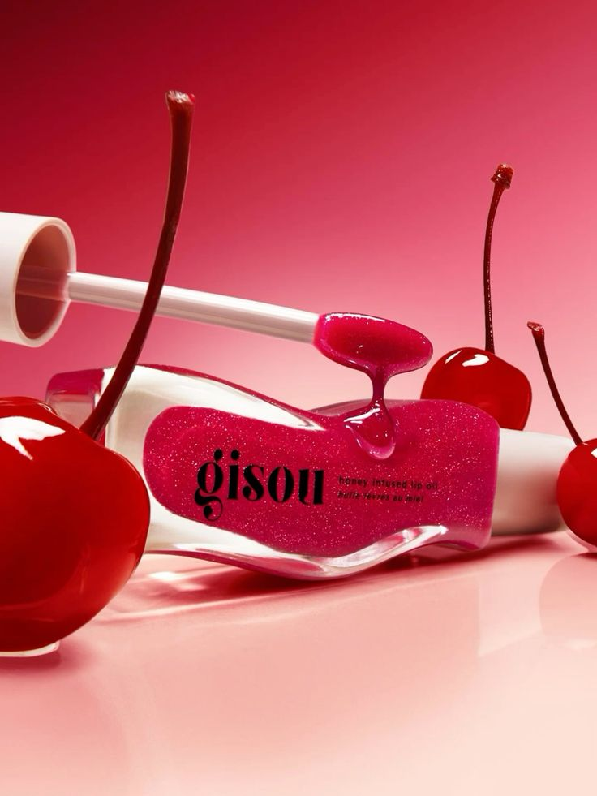
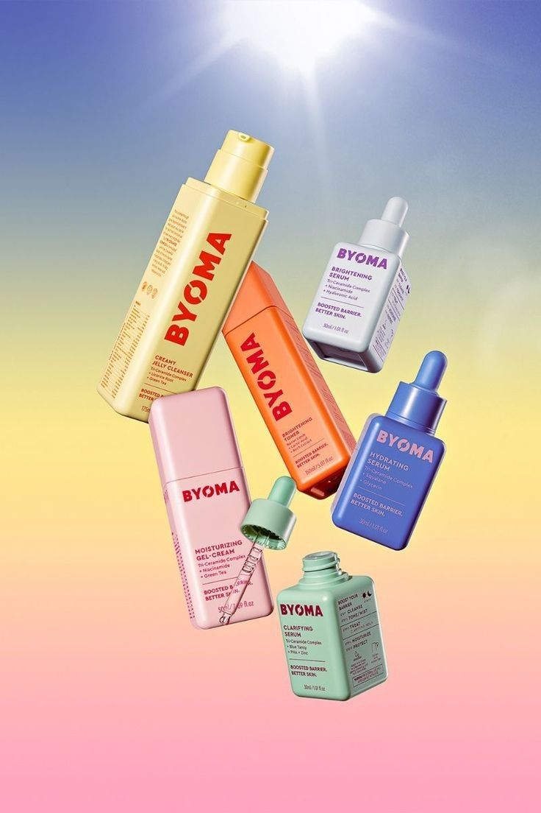
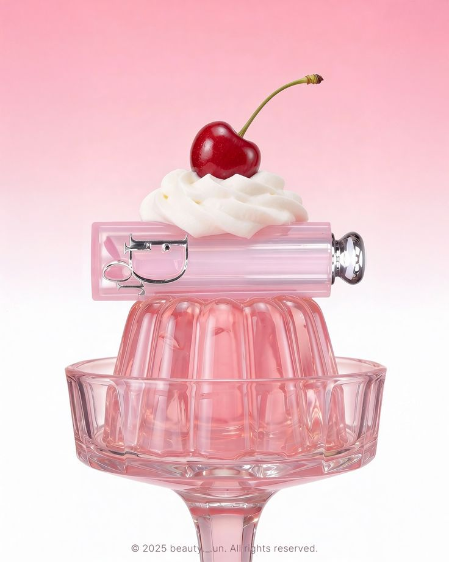

Alcance restrito
A loja atende principalmente clientes da sua região.
APRESENTAÇÃO DO PROJETO 2026
Uma loja física de cosméticos e cuidados pessoais que agora leva sua vitrine para o ambiente digital.


A DOR QUE IDENTIFICAMOS
A presença digital permite vender além da região da loja e reunir toda a jornada de compra em um só lugar.
A loja atende principalmente clientes da sua região.
A compra depende do atendimento físico e dos horários da loja.
Catálogo e pedidos circulam entre redes sociais e WhatsApp.
Reunir produtos, pedidos e pagamentos para alcançar novas clientes.
NOSSO PÚBLICO-ALVO
Interessadas em cosméticos, skincare e autocuidado, buscam uma compra online prática e intuitiva.

SEU MOMENTO, SEU JEITO.COMO CONSTRUÍMOS
React · TypeScript
Tailwind CSS
Python · FastAPI
PostgreSQL
Mercado Pago
GitHub · Figma
A interface apresenta os produtos; a API, o banco de dados e os pagamentos sustentam a compra do início ao fim.
STATUS DO PROJETO
Os principais fluxos de compra já estão implementados e integrados.